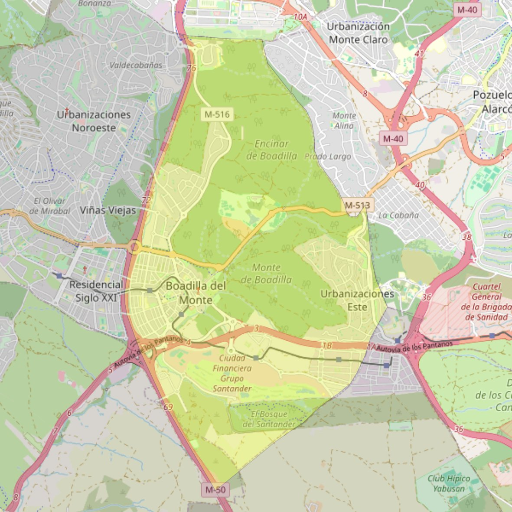

San Cristóbal

- Arciprestazgo
- Villaviciosa de Odón
- Población
- Boadilla del Monte
- Dirección postal
- Avda. Adolfo Suárez, 10
- Código postal
- 28660
- Extensión
- 21,70 km² (2.170 ha)
- Teléfono
- 916 331 053
- Correo electrónico
- parroquiaboadilla@gmail.com